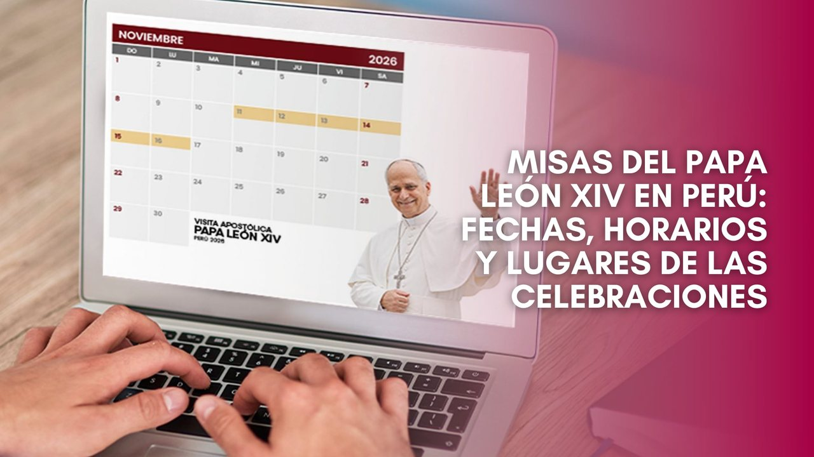
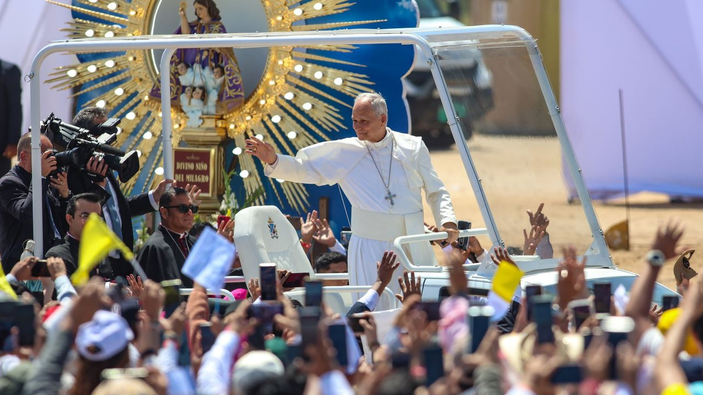
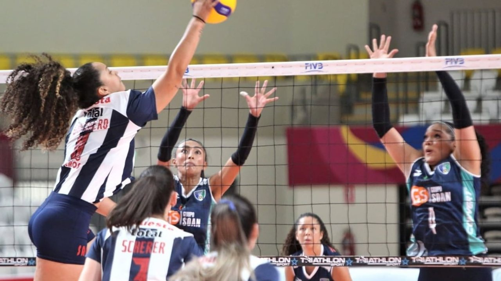
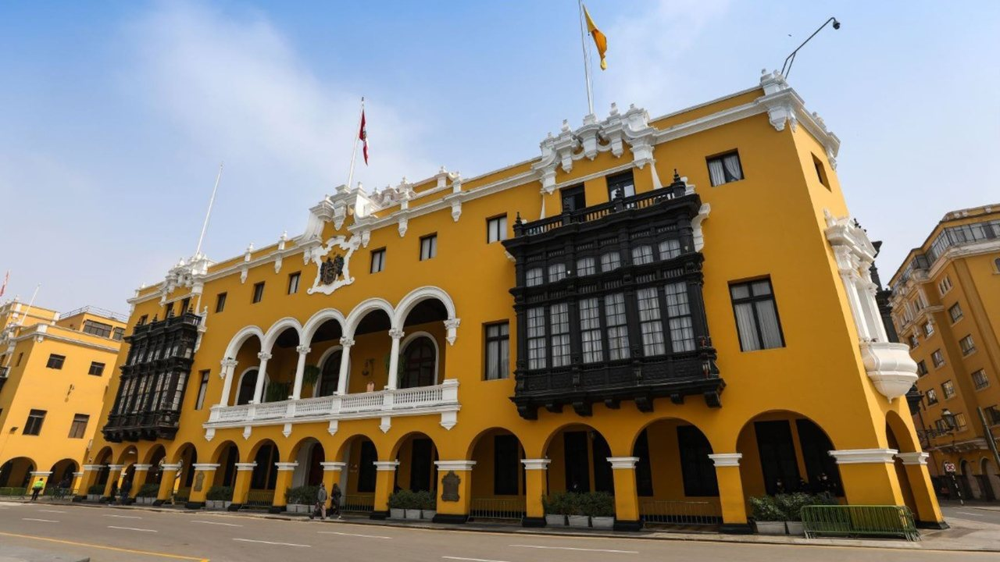

Todos los detalles sobre cuándo es, a qué hora, dónde se hará y cómo participar de la Misa del Papa León catorce en Pucallpa, te los brindaré a continuación.









Todos los detalles sobre cuándo es, a qué hora, dónde se hará y cómo participar de la Misa del Papa León catorce en Pucallpa, te los brindaré a continuación.
No duda en reconocer que la visita del papa León catorce al Perú es la más personal de su pontificado. Esta visita al Perú quizá es el momento más personal de todo su pontificado.
El ciudadano peruano de 34 años logró trasladarse hasta Canadá, específicamente a Montreal, donde fue detenido por otros delitos.
El papa León catorce visitará Uruguay, Argentina y Perú del 6 al 17 de noviembre, en su próximo viaje apostólico a Sudamérica.
Este domingo, la suspensión del servicio de agua potable en Lima continuará en diversas zonas como parte del mantenimiento programado por Sedapal.Estas labores son clave para modernizar la infraestructura de almacenamiento y mejorar la distribución del recurso hídrico en la ciudad.
El plazo para que las empresas hagan el depósito de noviembre vencerá el lunes 16 de noviembre.
El extitular del MEF Waldo Mendoza se mostró optimista sobre el futuro de la economía peruana. Con esos recursos, el Gobierno puede financiar Juntos, Cuna Más, Pensión 65, carreteras, etcétera.
grados 1743 establece que se presume la racionalidad de quien ejerce legítima defensa, incluso cuando utiliza fuerza letal. Una modificación al Código Penal establece que se presume que quien ejerce la legítima defensa actuó de manera racional, por lo que corresponde al Ministerio Público demostrar lo contrario.
El papa León catorce durante un encuentro de oración en el Santuario de Santo Toribio de Mogrovejo, en Zaña, Perú, el sábado 14 de noviembre de 2026.
Cada edición dura menos de dos minutos. En la web tienes el resumen de cada historia y el enlace directo al medio original para leerla completa.
Conoce Olfatecho →